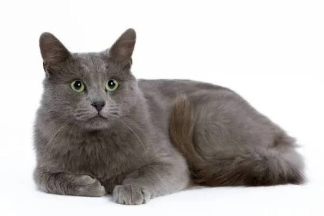

Breed Comparison
| Breed | Common Traits | Coat | Origin |
|---|---|---|---|
| Nebelung | Quiet, loyal, gentle | Medium-long blue-gray coat | United States |
| Siamese | Social, vocal, curious | Short coat with darker points | Thailand |
| Ragdoll | Relaxed, affectionate, large | Medium-long silky coat | United States |
| Persian | Calm, sweet, low-energy | Long thick coat | Persia/Iran region |
| Maine Coon | Friendly, large, playful | Long water-resistant coat | United States |

Important Note
A calico is not usually a breed. It is a coat color pattern with white, orange, and black patches. Many different breeds can have calico cats.
When choosing a cat, personality and health matter more than breed. Mixed-breed cats can be just as friendly, smart, and beautiful as purebred cats.